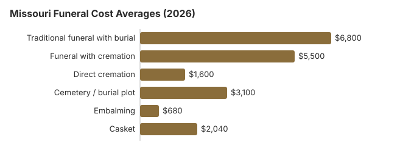

Funeral Costs in Missouri: What Families Pay in 2026
Funeral costs in Missouri run from about $1,600 for direct cremation up to $8,840 for a full traditional service with burial. The range is wide because funeral pricing in Missouri is not standardized: what you pay depends heavily on which provider you call first.
Missouri Funeral Prices by Item
Individual prices in Missouri still vary by provider, and the MO State Board of Embalmers & Funeral Directors licenses Missouri homes without setting their prices.
| Service | Average Cost | Range |
|---|---|---|
| Traditional funeral with burial | $6,800 | $5,100 – $8,840 |
| Funeral with cremation | $5,500 | $4,400 – $7,150 |
| Direct cremation | $1,600 | $1,120 – $2,240 |
| Cemetery / burial plot | $3,100 | $1,550 – $6,200 |
| Embalming | $680 | $500 – $1,500 |
| Casket | $2,040 | $680 – $5,440 |
Methodology note: These figures are our estimates, not a survey of local providers, and they are not a quote or professional advice. See how we calculate them or read the full disclaimer.

Cremation vs. Burial in Missouri
Cremation
- Direct cremation from $1,600
- Cremation with service from $5,500
- No cemetery plot required
- More flexible memorial options
- Current rate: 52% of families
Traditional Burial
- Traditional service from $6,800
- Cemetery plot from $3,100
- Vault or liner typically required
- Permanent memorial location
- Metal casket: about $2,500 national median (NFDA 2023 General Price List Study); Missouri prices vary by seller
Hidden Funeral Fees in Missouri: What to Watch For
Quoted prices in Missouri rarely include every charge.
- A funeral home may tell you embalming is mandatory, but Missouri law almost never requires it; ask which rule they mean.
What the Law Guarantees You in Missouri
If you believe a funeral home in Missouri has violated these rights, you can file a complaint with the FTC at ftc.gov or contact the Funeral Consumers Alliance for guidance.
Other Missouri Guides on This Site
For deeper analysis on specific disposition types in Missouri, see our dedicated guides:
Cremation Costs in Missouri
Complete guide to cremation pricing in Missouri including direct cremation from $1,600, cremation with service from $5,500, urn options, scattering regulations, and memorial alternatives. The cremation rate in Missouri is 52%.
Burial Costs in Missouri
Detailed breakdown of burial expenses in Missouri including cemetery plots from $3,100, caskets, vaults, headstones, and opening/closing fees. Total burial costs in Missouri range from $15,230 to $19,730.
Why Funeral Prices Vary in Missouri
Several forces shape funeral pricing in Missouri. Regionally, the Midwest trends toward lower-than-average costs relative to the $8,300 US median, and within Missouri that gap widens between a dense metro like Kansas City and the smaller towns: city prices routinely sit 10-30% higher.
What's Specific to Missouri (Midwest)
Midwestern funeral customs in Missouri tend to be direct and practical; viewings are common but not always lengthy, memorial luncheons are often hosted at the church or a family's home rather than the funeral home, and cremation followed by a graveside or memorial service is increasingly standard. This practicality tends to keep average Missouri funeral costs ($6,800) close to the national median.
Where Missouri Families Can Find Money for a Funeral
- In Missouri the county commission reimburses the reasonable cost of a coroner-arranged disposition (RSMo § 58.460), and it may pay burial costs where there is no estate and no one liable to pay (§ 58.550).
- To collect the one-time $255 from Social Security, a Missouri widow, widower or eligible child must call 1-800-772-1213, and the claim has to be made within two years.
- Whoever paid for a veteran's funeral in Missouri can file VA Form 21P-530EZ; for a death on or after October 1, 2026 that was not service-connected, VA pays up to $1,032 toward burial and $1,032 toward a plot (see our veteran burial benefits guide).
- More options for Missouri families, including Medicaid and charity help, are in our funeral payment assistance guide and how to pay for a funeral with no money.
Educational Resources
- Funeral Consumers AllianceIndependent nonprofit consumer advocacy for funeral rights
- FTC Funeral RuleThe federal rule protecting funeral consumers
- Funeral Insurance GuideCompare final expense and burial insurance options
- Best Burial Insurance CompaniesSide-by-side comparison of top burial insurance providers
- Payment Assistance GuideGovernment programs and financial help for funeral costs
- Insurance Plan ComparisonCompare coverage, premiums, and payout speed across providers
Compare Funeral Costs
- Average Funeral Cost in 2026National cost breakdown with real prices
- Cremation vs. Burial Cost ComparisonSide-by-side price comparison to help you decide
- Funeral Cost BreakdownEvery line item explained: know what you're paying for
- Cheapest Funeral OptionsLower-cost alternatives, with typical price ranges
- Direct Cremation: Most Affordable OptionNFDA 2023 median $2,645 with a family-supplied container (latest available)
- How to Compare Funeral PricesStep-by-step guide to getting the best price
Missouri Funeral Costs by City
Funeral costs vary across Missouri's major metropolitan areas. Louis, and that Missouri difference shows up on the General Price List rather than in one statewide number. Here are the major cities in Missouri:
The Least Expensive Ways to Hold a Funeral in Missouri
| Option | Estimated Cost | What's Included |
|---|---|---|
| Direct cremation | $1,600 | Cremation with no viewing or service; Missouri needs a permit but sets no fixed wait (20 CSR 2120-2.071; RSMo § 194.119). |
| Direct burial | $3,400 | Burial soon after death without embalming or viewing; the Missouri cemetery charges for the plot and opening separately. |
| Green burial | $3,740 | Natural burial without embalming or a vault, where a Missouri cemetery permits it. |
| Cremation + memorial | $5,500 | Cremation followed by a separate memorial service |
| Traditional funeral | $6,800 | Full service with viewing, ceremony, and burial |
Steps for Planning a Funeral in Missouri
Families arranging a funeral in Missouri for the first time often move faster than they need to.
- Decide on disposition: cremation in Missouri or burial in Missouri.
Funeral rules and help in Missouri
If a funeral home in Missouri refuses to show prices or pressures you, the licensing body is the Missouri State Board of Embalmers & Funeral Directors, reachable at 573-751-0813.
Hiring a funeral home is a choice, not a legal requirement, for most steps of a funeral in Missouri; the Funeral Consumers Alliance does not count Missouri among the nine states with funeral-director rules, and you can buy only the services you want.
For families comparing a funeral with cremation, note that Missouri sets no fixed waiting period before cremation, but a permit is needed first (20 CSR 2120-2.071; RSMo § 194.119).
When no relative or friend claims a body in Missouri, the coroner arranges burial or cremation and the county commission reimburses the reasonable cost (RSMo § 58.460); where there is no estate and no one liable to pay, the commission may pay burial costs from the county treasury (§ 58.550). (Source: RSMo §§ 58.460, 58.550.) Social Security's one-time $255 death payment, paid only to a qualifying spouse or child, is small next to the $6,800 average Missouri funeral in the table.
A Missouri funeral home can reserve a veteran's grave at Jefferson Barracks National Cemetery (314-845-8320) or Springfield National Cemetery (417-881-9499, cremated remains only) through the VA's National Cemetery Scheduling Office (800-535-1117). The state-run veterans cemeteries, Missouri State Veterans Cemetery - Bloomfield (573-568-3871), Missouri State Veterans Cemetery - Fort Leonard Wood (573-774-3496), Missouri State Veterans Cemetery - Higginsville (660-362-6111), Missouri State Veterans Cemetery - Jacksonville (660-372-6024), or Missouri State Veterans Cemetery - Springfield (417-823-3944), take requests directly.
Next steps for a funeral in Missouri
- Get written price lists from at least two Missouri funeral homes before you agree to anything.
- Consider a Missouri memorial service after cremation or burial, which avoids embalming and viewing fees.
- Ask the Missouri county coroner or medical examiner about a county-paid disposition before the funeral home is chosen.
- For a veteran, price Jefferson Barracks National Cemetery against a private Missouri plot before choosing.
- Keep the board's number, 573-751-0813, in case a funeral home will not honor its price list.
Frequently Asked Questions
What is the average price of a funeral in Missouri right now?
Current averages in Missouri come in at $6,800 for a traditional funeral, $5,500 for cremation with a service, and from $1,600 for direct cremation, with the traditional figure sitting 18% below the $8,300 US median. Cemetery and burial fees add roughly $3,100 when a Missouri family chooses burial.
Is cremation cheaper than burial in Missouri?
In Missouri, direct cremation at $1,600 costs about $5,200 less than the $6,800 traditional funeral, and roughly $8,300 less once about $3,100 in cemetery costs is added.
What rights do Missouri families have when arranging a funeral?
The federal FTC Funeral Rule gives Missouri families the right to an itemized price list, to prices over the phone, and to buy only the goods and services they want. According to the Funeral Consumers Alliance, Missouri does not require families to hire a funeral director for every step. Complaints about a Missouri funeral home go to the Missouri State Board of Embalmers & Funeral Directors (573-751-0813).
How do I keep funeral costs down in Missouri?
Township and county cemeteries in Missouri rarely appear in online searches but are often half the price of private cemeteries; call the clerk's office in the county where burial will occur. Independent, family-owned funeral homes still dominate Missouri and tend to price more transparently than chain providers.
Does Missouri require embalming?
No. Under 20 CSR 2120-2.070, a Missouri funeral home may not hold an unembalmed body longer than 24 hours unless it is refrigerated at 40°F or below or sealed in an airtight casket. The same rule requires written authorization to embalm, which the deceased can give in advance, including in a preneed contract.
A county coroner can order embalming when no family can be found within six hours (RSMo § 58.375), and the family pays later. Because Missouri requires written authorization, a charge of about $680 (our Missouri estimate) should not appear on a bill unless someone signed for it or the coroner ordered it.
Is Missouri cheaper or more expensive than the US average for funerals?
Missouri requires a signed statement of charges. Under RSMo 333.145, before services are provided the funeral home must give a written statement, signed by both sides, listing the selected service price, each extra item, the cash advances and the payment method. A cash advance may be billed only at the net amount the home paid, and displayed merchandise must be price-marked. Hold quotes against the national median of $8,300 with viewing and burial, or $6,280 with cremation (NFDA 2023).
Which funeral option costs the least in Missouri?
Direct cremation carries the lowest price tag in Missouri, from roughly $1,600. Direct burial is the next step up at about $3,400, which is $3,400 below a traditional Missouri funeral.
How can I find affordable funeral homes in Missouri?
Ask at least three Missouri providers for their General Price Lists and compare direct cremation and immediate burial lines. Buying the casket or urn elsewhere is allowed under the FTC Funeral Rule, and the Missouri home cannot charge a fee for it.